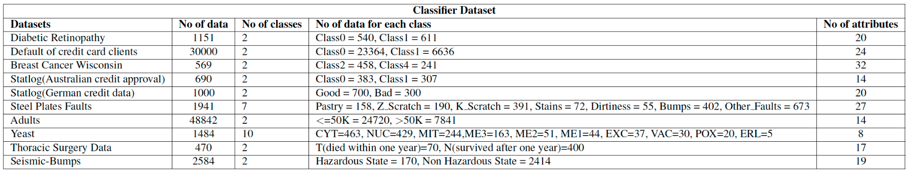
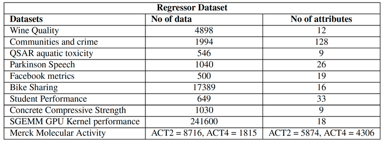
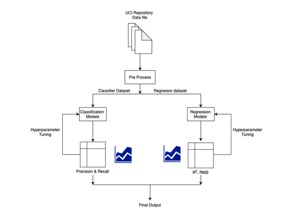
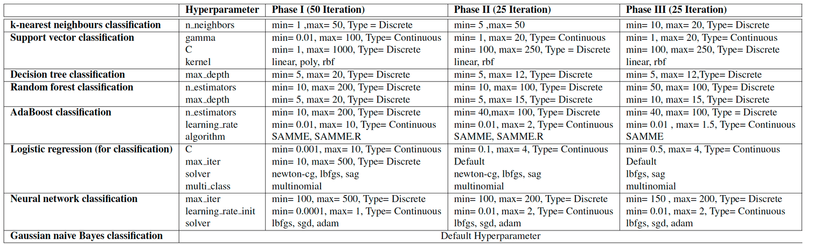
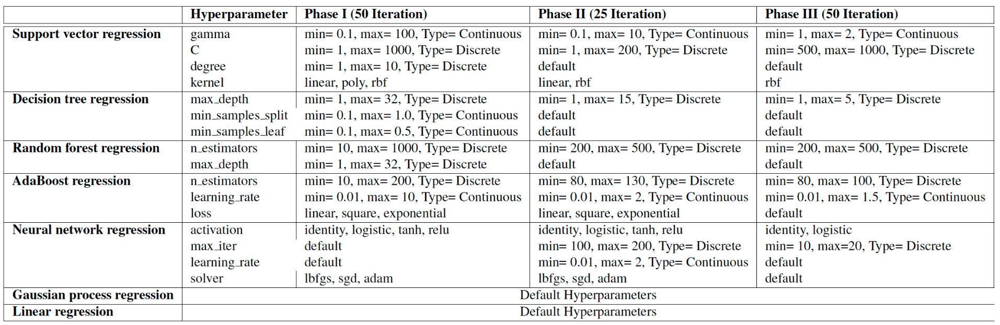
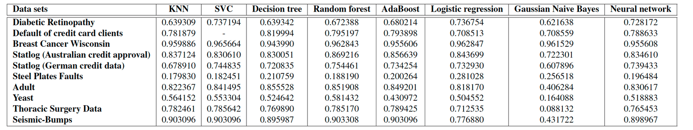
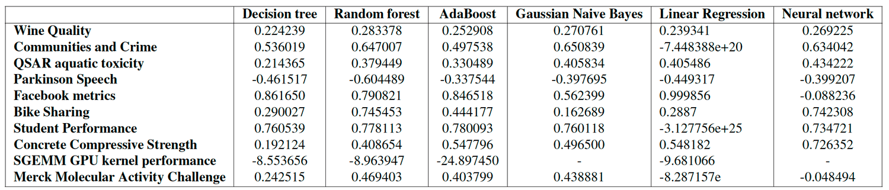

An Informed Approach to Machine Learning Model Selection
Machine Learning Model Selection Research
May 27, 2020
As a master’s graduate, the goal of this project was to gain hands-on experience in applied machine learning by working through the full lifecycle of model development. This included collecting and working with datasets in multiple formats, preparing data for training and testing, experimenting with both classification and regression algorithms, tuning hyperparameters, evaluating performance, creating visualizations, exploring interpretability methods, and communicating results clearly.
Developing these skills required integrating knowledge from lectures, labs, research paper reading, and continuous practice. Feedback from fellow researchers played a critical role in refining the methodology and interpretation of results.
Overview of the Project
This project focuses on the comprehensive training, evaluation, and comparison of machine learning models for both classification and regression tasks. The performance of eight classification models was evaluated across ten datasets, while seven regression models were assessed on another set of ten datasets.
Most datasets were sourced from the UCI Machine Learning Repository and represent a wide range of domains. Each dataset required careful preprocessing and feature selection prior to model training.
Hyperparameter tuning was conducted for each model, and results were evaluated using standard metrics appropriate for classification and regression. This workflow mirrors real-world machine learning problems where no single algorithm performs optimally across all tasks.
Project Goals
The primary goals of this project were to:
• Train & evaluate 8 classification models on 10 classification datasets
• Train & evaluate 7 regression models on 10 regression datasets
• Perform hyperparameter tuning for each model
• Analyze performance using appropriate metrics and visualizations
• Compare the relative effectiveness of models across tasks
Although the datasets were partially preprocessed, significant effort was still required to understand their structure and prepare them correctly.
This served as valuable practice for real-world machine learning projects.
I. Classification Task
The first phase of the project involved training and evaluating eight classification models across ten datasets covering domains such as medical diagnosis, credit scoring, biological classification, and industrial fault detection.
The classification models evaluated included:
1. K-nearest neighbors
2. Support vector classification
3. Decision tree classifiers
4. Random forests
5. AdaBoost
6. Logistic regression
7. Gaussian Naive Bayes
8. Neural network classifiers
The classification datasets included:
1. Diabetic Retinopathy
2. Default of Credit Card Clients
3. Breast Cancer Wisconsin
4. Statlog Australian Credit Approval
5. Statlog German Credit Data
6. Steel Plates Faults
7. Adult dataset
8. the Yeast dataset
9. Thoracic Surgery Data
10. Seismic-Bumps
Data Preparation for Classification
Each dataset required identifying feature columns and class labels, handling missing values through imputation, and applying standardization or normalization.
Feature scaling was particularly important for models such as support vector machines and neural networks, where unscaled inputs can significantly degrade performance.
Hyperparameter Tuning for Classification
For each classification model, one to three key hyperparameters were tuned based on their expected impact on performance.
For example, support vector machines required tuning of the regularization parameter C and kernel coefficient gamma. Random forests required tuning of the number of trees and maximum tree depth. Neural networks required tuning of hidden layers, learning rate, and iteration count.
Both grid search and random search were used to balance thorough exploration of the parameter space with computational efficiency.
Model Evaluation for Classification
Classification models were evaluated using metrics including:
1. Accuracy
2. Precision
3. Recall
4. F1-score
5. Confusion matrices
6. ROC-AUC scores
Cross-validation was used throughout to ensure reliable evaluation on unseen data and to reduce overfitting.
II. Regression Task
The second phase of the project focused on regression tasks. Seven regression models were trained and evaluated across ten datasets covering topics such as wine quality, student performance, chemical toxicity, and GPU kernel performance.
The regression models evaluated included:
1. Support vector regression
2. Decision tree regression
3. Random forest regression
4. AdaBoost regression
5. Gaussian process regression
6. Linear regression
7. Neural network regression
The regression datasets included:
1. Wine Quality
2. Communities and Crime
3. QSAR Aquatic Toxicity
4. Parkinson Speech
5. Facebook Metrics
6. Bike Sharing hourly data
7. Student Performance
8. Concrete Compressive Strength
9. SGEMM GPU Kernel Performance
10. Merck Molecular Activity Challenge
Data Preparation for Regression
Data preparation for regression focused on identifying predictors and target variables, handling missing values and outliers, and applying feature scaling where necessary.
Scaling was especially important for support vector regression and neural networks due to their sensitivity to feature magnitude.
Hyperparameter Tuning for Regression
Key hyperparameters were tuned for regression models in a similar manner to classification models.
- Support vector regression required tuning of C and gamma
- Random forest regression required tuning of the number of estimators and maximum depth
- Neural networks required tuning of hidden layer sizes, learning rates, and iteration limits
Model Evaluation for Regression
Regression models were evaluated using:
1. Mean squared error
2. Mean absolute error
3. R-squared scores
Cross-validation ensured reliable performance estimates on unseen data.
Implementation Details
All experiments were executed using a unified pipeline that handled dataset loading, preprocessing, model training, hyperparameter tuning, and evaluation. Datasets were loaded using pandas, with missing values replaced by NaN.
StandardScaler was applied after K-fold splitting to prevent data leakage. Categorical features were handled using one-hot encoding, and label encoding was applied where required. Non-predictive attributes were removed, and for certain regression datasets with multiple outputs, target values were averaged.
Hyperparameter tuning was performed in three phases using random search, with parameter ranges refined after each phase. Parallel execution was used to manage computational cost.
 Observations
For classification tasks, random forests, support vector classifiers, and AdaBoost produced strong results. However, on unseen datasets, support vector classifiers and neural networks generalized better than random forests and AdaBoost.
Support vector classifiers delivered strong performance but exhibited long training times, making them less efficient in practice.
For regression tasks, neural networks, random forests, and AdaBoost achieved the best performance overall, though often at the cost of longer training times.
Findings and Inferences
- No single model consistently outperformed all others across every dataset. Model performance was highly dependent on dataset characteristics.
- Hyperparameter tuning significantly improved performance, demonstrating the importance of systematic optimization.
- Clear trade-off between interpretability and predictive performance. Simpler models were easier to explain but often underperformed compared to more complex approaches.
- Dataset complexity strongly influenced model suitability. Some datasets required advanced models, while simpler datasets were well-handled by less complex ones.
Conclusion
This project provided extensive hands-on experience in training, tuning, and evaluating machine learning models across diverse datasets. It reinforced the importance of data preprocessing, hyperparameter optimization, and careful evaluation.
The experience closely mirrors real-world machine learning practice, where model selection must be informed by data characteristics, performance metrics, and practical constraints rather than reliance on a single algorithm.
Click the link for: Informed ML Model selection code repository
Thanks for reading. If this was useful, you’ll probably like the other posts too.